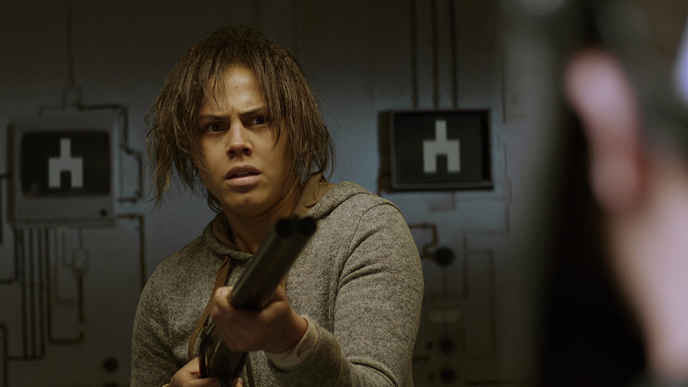
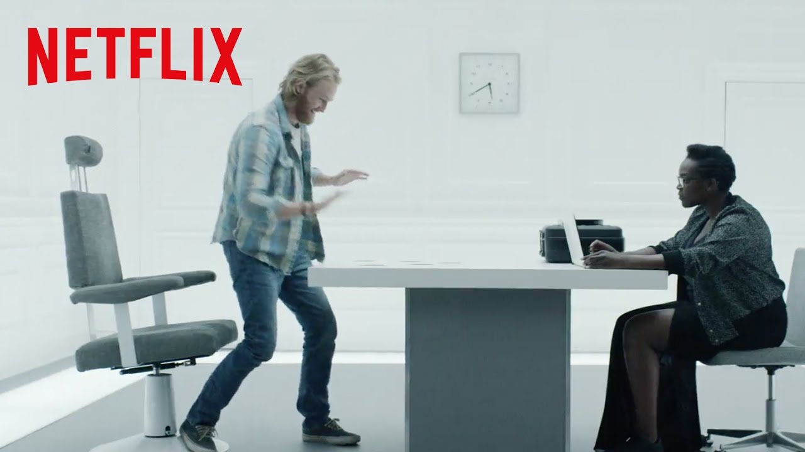

Explora las Temporadas
Cada temporada es un viaje a un universo distinto. Descubre los episodios que definieron la serie.

Temporada 1
La temporada que lo inició todo. Con solo tres episodios, estableció el tono oscuro y satírico de la serie, explorando el lado retorcido de la política, el entretenimiento y las relaciones en la era digital.
Ver Episodios

Temporada 2
Ampliando sus horizontes, esta temporada profundiza en la inteligencia artificial, la justicia y la memoria. Incluye el especial "Blanca Navidad", considerado uno de los mejores episodios de la serie.
Ver Episodios

Temporada 3
La primera temporada producida por Netflix. Con un mayor presupuesto y alcance internacional, nos regaló episodios icónicos como "San Junipero" y "Caída en picado", explorando desde la nostalgia virtual hasta la tiranía de las redes sociales.
Ver Episodios